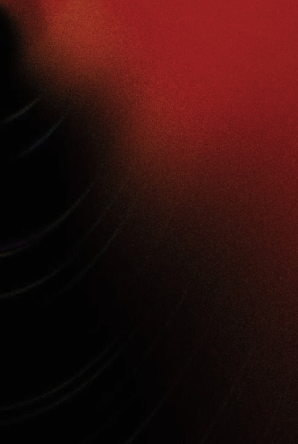
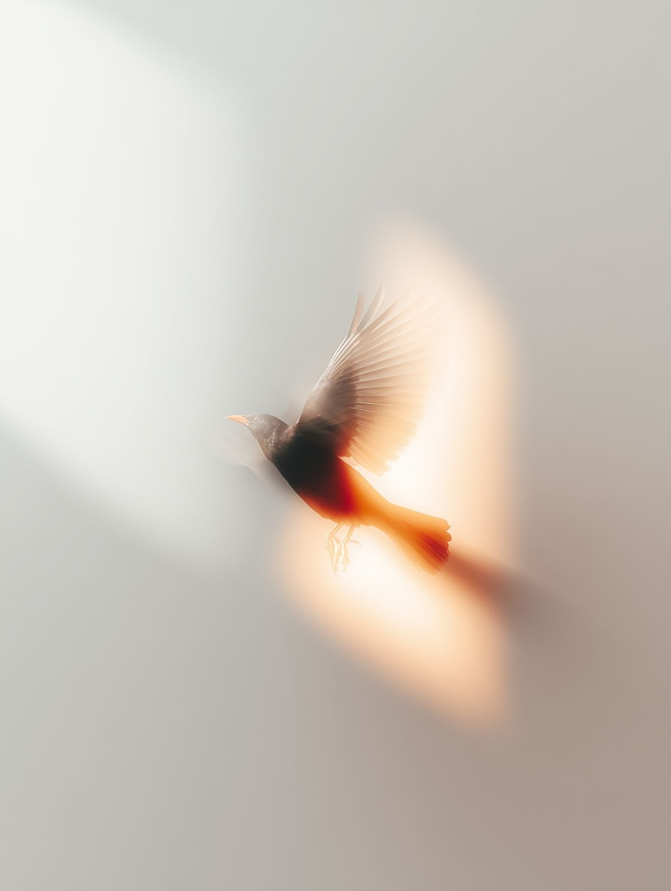
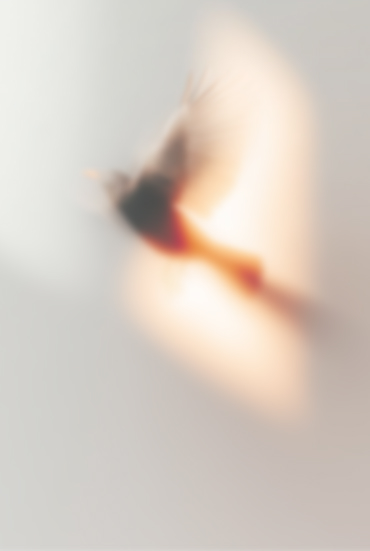
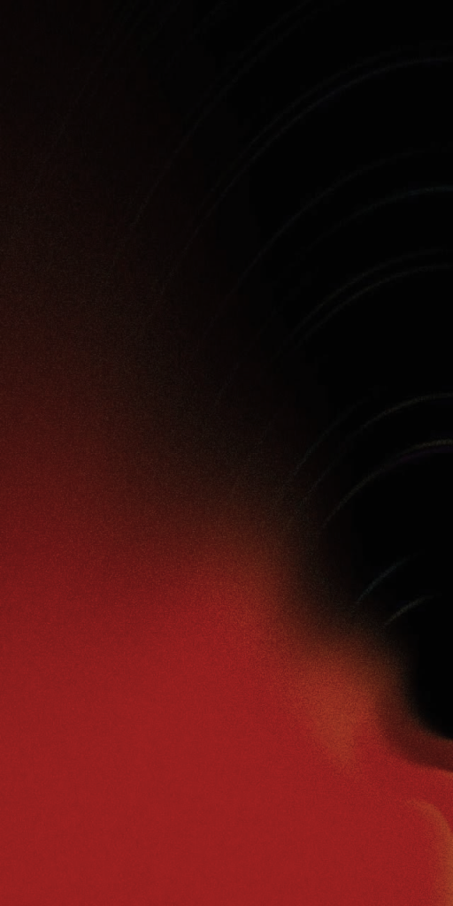

The Performance
Пространство на пересечении культуры, образования и лидерства.

The Performance — Est. 2016


Мысль рождается в слове
Слово формирует влияние
Влияние формирует реальность
Среда единомышленников

The Performance
Пространство на пересечении культуры, образования и лидерства.

Речь развивает интеллект, а не украшает его

Говорить так, чтобы менялась не тема разговора, а положение дел

Влияние без фундамента — громкость